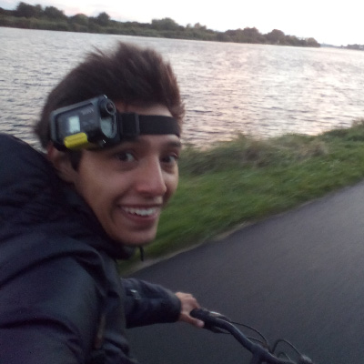

Jared Gusano

Summary
I'm a graphic designer that likes pixel art,
knows very little 3d modelling and video editing,
does photography (haven't done it in a while).
and is currently a interpreter: lang="en" to lang="es".
Education
- Bachelor in Graphic Design and Video Edition - Universidad Internacional (2014-2018)
- 1 semester abroad in Caen, France at L'école Superierure D'arts et Médias.
Work Experience
Graphic Designer at a Print shop.
February 2018 - October 2018
- Designed graphics for marketing and corporate stationery.
- Created ready to print files for offset printing and large format.
- Responsible for contacting clients & providers to keep materials in stock.
Jr. Graphic Designer at a Digital Marketing Agency (Working remotely).
December 2018 - March 2019
- Created advertisements for social media using branding guidelines.
- Products photo edition.
Graphic Designer and production technician at a print shop.
May 2021 - February 2022
- The only employee in charge of designing and printing graphic materials.
- Dealt directly with clients and discussed solutions to their needs.
Interpreter at LanguageLine Solutions
March 2022 - Present
- Started as Customer Service interpreter (L1) for various industries including:
- Utilities
- Insurance
- Financial Institutions
- Traveling and Hospitality Agencies
- Medical non-clinic and EMS (911)
- Currently on Medical clinic and non-clinic interpretation (L3):
- Hospitals and medical offices
- Medical Insurance Companies
- Financial Institutions
Software Skills
Adobe Creative Suite
- Adobe Illustrator and Photoshop.
- Adobe Premiere, After Effects and Audition.
3d Modeling
Pixel art
Awards and Certifications
- English IELTS Certification. Overall Score: 7.0/9.0 | CEFR: C1
- French DELF B1 Certification. Score: 83/100.
About Gusano